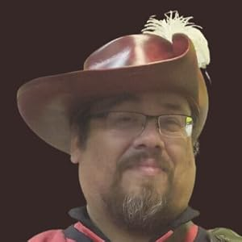

About the Author

A.J. d'Cercy is a lifelong reader, storyteller, and devoted father from Northwest Ohio. The eldest of seven, he grew up haunting the local library — chasing Goosebumps books, devouring Redwall, and falling in love with worlds that felt bigger than his own. Video games like Final Fantasy only expanded that love of the fantastical.
These days, he channels that same love into writing fiction, playing video games like Elden Ring and FFXIV, running D&D and Pathfinder campaigns for friends and family, and playing Magic: The Gathering — including designing his own custom cards. When he's not at the gaming table, he can be found learning swordplay, with a particular fondness for the rapier — which may explain why his debut protagonist shares the same preference.
His favorite books, in no particular order, are Redwall, Nevernight, Piercing the Darkness, The Cleric Quintet, and The Hot Zone. He is currently reading The Lightlark Saga, by Alex Aster.